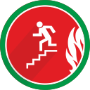
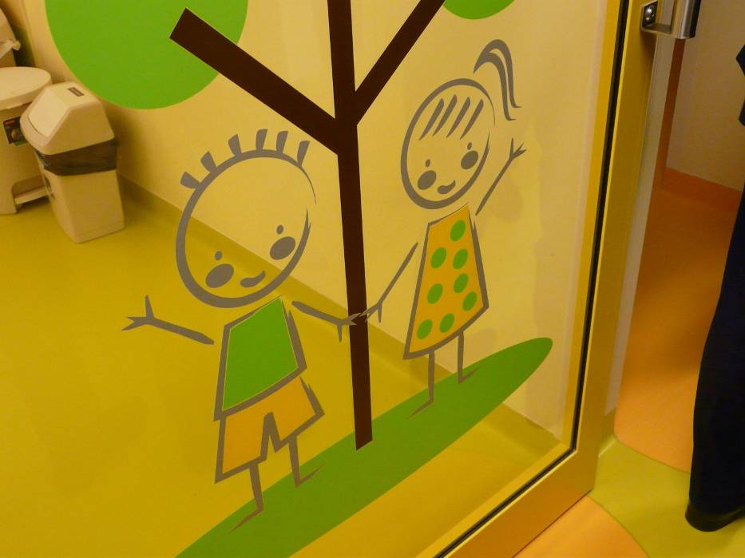

bhp


Pani kierownik, kiedy dostanę nowe krzesło? Bo mnie plecy bolą...
Ochrona przeciwpożarowa 2016
Film - "Pożar"
Rejestr Ekspozycji Zawodowych w Szpitalu Wojewódzkim w drugim półroczu 2016 r.
Zawiadomienie o wypadku przy pracy
Zapotrzebowanie na wodę mineralną dla pracowników
Szkolenie ewakuacyjne
...